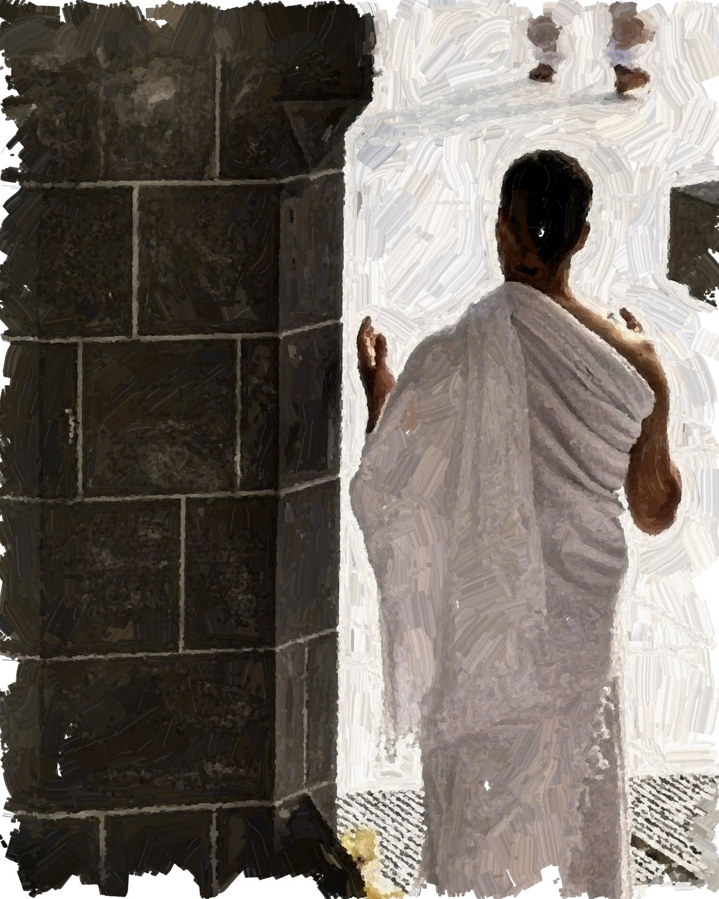

Prepare for Umrah
Plain-language guidance for before you travel, at the miqat and during the rites.
Umrah step by step
Each stage of the journey, in order, with the guide that covers it.
Documents, packing and health preparation.
Read the guide 2Before the miqatEntering ihram, and timing on a flight.
Read the guide 3TawafWhat to expect at the Kaaba.
Guide in preparation 4Sa'iWalking between Safa and Marwah.
Guide in preparation 5Hair cutting or trimmingCompleting Umrah after sa'i.
Guide in preparationSources: Official Umrah journey (Nusuk) · Hajj rituals and miqat (Nusuk) · Umrah and Visit Guide (Ministry of Hajj and Umrah). Guides are general preparation information, not religious rulings.
Popular guides

What to pack for Umrah: a complete checklist
Documents, ihram, fragrance-free care, prayer essentials and what to leave at home, with a checklist you can tick off.

Entering ihram on a flight: miqat guidance
Most pilgrims travelling from the UAE pass a miqat in the air. How to prepare at home, at the airport and on board.
 In preparation
In preparationThe rites of Umrah, step by step
Ihram, tawaf, sa'i and hair cutting or trimming, explained in order with what to expect at each stage.

In preparationYour first Umrah: what to expect
An overview for first-time pilgrims: the journey, the rites, the crowds and how to prepare in the weeks before you travel.
 In preparation
In preparationTawaf and sa'i: practical tips for busy times
Quieter times, staying together as a group, footwear storage, water and rest, and support for older pilgrims.

How to choose an ihram: fabric, weight and size
How towelling, waffle and terry weaves differ, what weight means in the heat, and how to choose between Regular and Long.
 In preparation
In preparationWhen to start preparing: a timeline for your trip
What to arrange eight weeks, two weeks and two days before departure, from permits and vaccinations to your final packing.
 In preparation
In preparationWhat women wear for Umrah and Hajj
Women do not need a white two-piece ihram. Practical guidance on modest, breathable clothing, hijabs and layers for the journey.
 In preparation
In preparationFragrance-free care: what to check before you travel
Why fragrance matters in the state of ihram, how to read a label and what to pack for before, during and after the rites.
 In preparation
In preparationIhram for men: how to wear the izar and rida
How to fold and secure the izar, how to wear the rida, and how a belt keeps your documents safe without pins.
 In preparation
In preparationDuas for the journey, in Arabic and English
Duas for travel, entering ihram and each stage of the rites, with transliteration. Reviewed before publication.
 In preparation
In preparationCaring for your ihram after the journey
Washing, drying and storing your ihram so it is ready for your next journey, or to pass on to a family member.
No guides for this topic yet. More guides are in preparation.

Preparation guide (PDF)
The same guide and dua booklet included in every order, available as a PDF and through the QR code in the box.
- Packing checklist for men and women
- The rites of Umrah, in order
- Duas in Arabic, with transliteration and English
Recommended products
Selected for this guide.